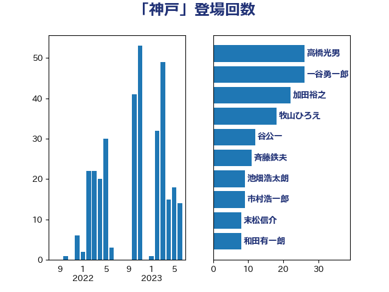

単語「神戸」

| 高橋光男 | 公明党 | 26 回 |
| 一谷勇一郎 | 日本維新の会 | 26 回 |
| 加田裕之 | 自由民主党 | 22 回 |
| 牧山ひろえ | 立憲民主党 | 18 回 |
| 谷公一 | 自由民主党 | 12 回 |
| 斉藤鉄夫 | 公明党 | 11 回 |
| 池畑浩太朗 | 日本維新の会 | 9 回 |
| 市村浩一郎 | 日本維新の会 | 9 回 |
| 末松信介 | 自由民主党 | 8 回 |
| 和田有一朗 | 日本維新の会 | 8 回 |
| 住吉寛紀 | 日本維新の会 | 8 回 |
| 伊東信久 | 日本維新の会 | 7 回 |
| 井坂信彦 | 立憲民主党 | 7 回 |
| 阿部弘樹 | 日本維新の会 | 6 回 |
| 清水貴之 | 日本維新の会 | 6 回 |
| 吉田はるみ | 立憲民主党 | 5 回 |
| 湯原俊二 | 立憲民主党 | 4 回 |
| 赤木正幸 | 日本維新の会 | 3 回 |
| 西村康稔 | 自由民主党 | 3 回 |
| 本村伸子 | 日本共産党 | 3 回 |
| 伊藤渉 | 公明党 | 3 回 |
| 関芳弘 | 自由民主党 | 2 回 |
| 鎌田さゆり | 立憲民主党 | 2 回 |
| 鈴木英敬 | 自由民主党 | 2 回 |
| 鈴木俊一 | 自由民主党 | 2 回 |
| 谷川とむ | 自由民主党 | 2 回 |
| 萩生田光一 | 自由民主党 | 2 回 |
| 美延映夫 | 日本維新の会 | 2 回 |
| 紙智子 | 日本共産党 | 2 回 |
| 石原正敬 | 自由民主党 | 2 回 |
| 矢倉克夫 | 公明党 | 2 回 |
| 田村智子 | 日本共産党 | 2 回 |
| 片山大介 | 日本維新の会 | 2 回 |
| 片山さつき | 自由民主党 | 2 回 |
| 柳本顕 | 自由民主党 | 2 回 |
| 松本剛明 | 自由民主党 | 2 回 |
| 朝日健太郎 | 自由民主党 | 2 回 |
| 工藤彰三 | 自由民主党 | 2 回 |
| 川田龍平 | 立憲民主党 | 2 回 |
| 川合孝典 | 国民民主党 | 2 回 |
| 国光あやの | 自由民主党 | 2 回 |
| 音喜多駿 | 日本維新の会 | 1 回 |
| 青木愛 | 立憲民主党 | 1 回 |
| 鈴木義弘 | 国民民主党 | 1 回 |
| 足立康史 | 日本維新の会 | 1 回 |
| 芳賀道也 | 国民民主党 | 1 回 |
| 篠原孝 | 立憲民主党 | 1 回 |
| 空本誠喜 | 日本維新の会 | 1 回 |
| 神谷宗幣 | 参政党 | 1 回 |
| 石井苗子 | 日本維新の会 | 1 回 |
| 石井浩郎 | 自由民主党 | 1 回 |
| 田中英之 | 自由民主党 | 1 回 |
| 浅野哲 | 国民民主党 | 1 回 |
| 泉田裕彦 | 自由民主党 | 1 回 |
| 泉健太 | 立憲民主党 | 1 回 |
| 沢田良 | 日本維新の会 | 1 回 |
| 水岡俊一 | 立憲民主党 | 1 回 |
| 梅村みずほ | 日本維新の会 | 1 回 |
| 松本尚 | 自由民主党 | 1 回 |
| 村田享子 | 立憲民主党 | 1 回 |
| 杉本和巳 | 日本維新の会 | 1 回 |
| 早稲田ゆき | 立憲民主党 | 1 回 |
| 岸田文雄 | 自由民主党 | 1 回 |
| 寺田学 | 立憲民主党 | 1 回 |
| 室井邦彦 | 日本維新の会 | 1 回 |
| 大石あきこ | れいわ新選組 | 1 回 |
| 大島敦 | 立憲民主党 | 1 回 |
| 塩田博昭 | 公明党 | 1 回 |
| 伊藤孝恵 | 国民民主党 | 1 回 |
| 仁比聡平 | 日本共産党 | 1 回 |
| 中西祐介 | 自由民主党 | 1 回 |
| 三木圭恵 | 日本維新の会 | 1 回 |